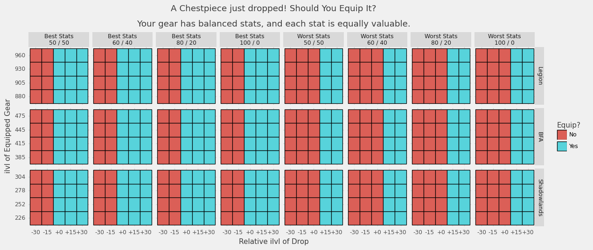
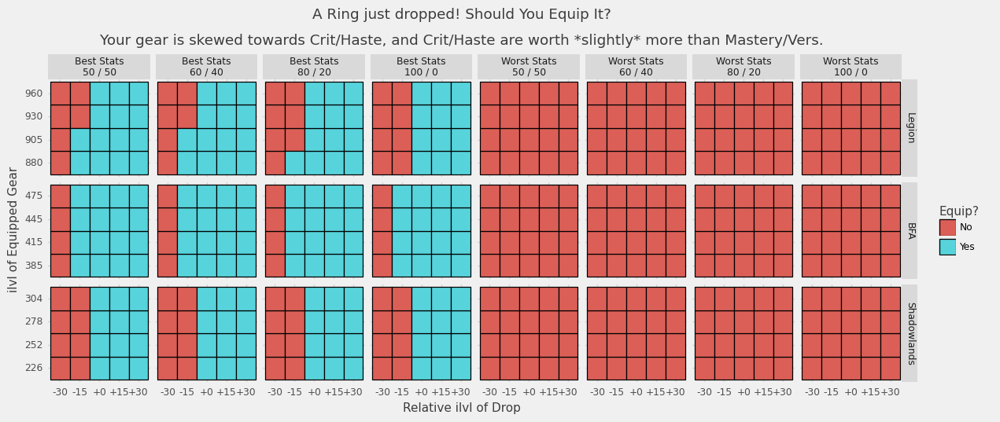
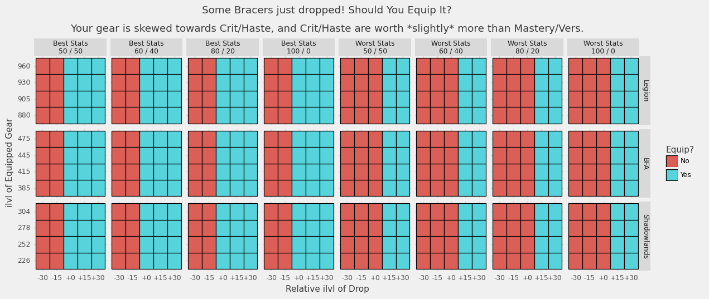
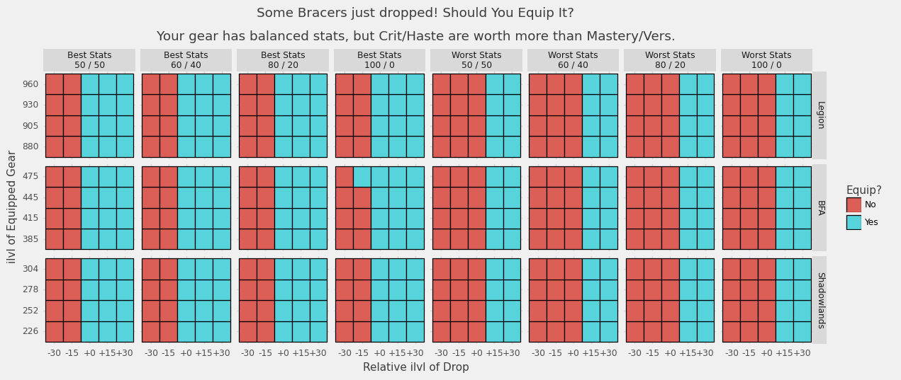
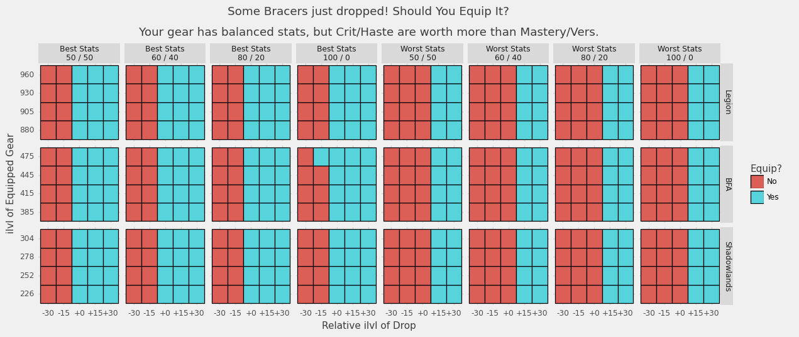

Author: emallson (Eisenpelz-Turalyon NA)
In Battle for Azeroth, Blizzard reduced the rate at which secondary stats scale relative to prior expansions. To the best of our understanding, this change was made in an attempt to eliminate (or at least limit) the scenarios where it was correct to equip lower item level gear to get better stats. While this change was mostly invisible to the average player, coming as it did during the ilvl squish, it has been contentious among the theorycrafting community and the general opinion is that it failed at this purpose.
Recently, we discovered that Blizzard had implemented new diminishing returns on secondary stat scaling on the Shadowlands Beta. From my point-of-view, this change reflects a misunderstanding of the impact of the BFA changes as well as a frankly concerning willingness to layer new, opaque systems on top of an already notoriously opaque game.
Nonetheless, much of my (and the wider community's) concerns are based largely on feelycraft, not concrete analysis. As a result, this week I put together some concrete analysis on when it is valuable to drop ilvl for better stats under each secondary scaling model.
I considered three scaling models. Technically, there is a fourth (pre-Legion) that I could consider, which includes mainstat on jewelry. However, exact scaling data for that time period is had to get at this point so I have omitted it.
During Legion, secondary stats scaled using the exact same formula as primary stats. This is an exponential formula, resulting in rapid stat gains as ilvl increases (for example: from one tier to the next).
Conceptually: with each ilvl increase you would gain an additional percentage of your current stats. As your stats increase, the gain from adding ilvl also increased.
The change in Battle for Azeroth made secondary stats scale (approximately) linearly.
Conceptually, this means that with each ilvl increase you would gain a fixed number of additional stats. As your stats increase, the gain from adding ilvl stays constant.
The change in Shadowlands adds diminishing returns on top of the BFA model.
Conceptually, this means that with each ilvl increase you gain a fixed number of additional stats---but if you put too many points in an individual stat, you effectively lose some of those points.
With current tuning, at low ilvls this is basically equivalent to BFA: as your stats increase, the gain from adding ilvl stays constant. However, at higher ilvls it changes to: as your stats increase, the gain from adding ilvl decreases.
Part of this analysis is to give an idea of when that change occurs.
To evaluate damage properly, we'd need to use a tool like simulationcraft. Rather than attempt to retrofit different scaling models into simc, I have instead opted for a simplified model that should still capture much of the behavior we are interested in.
Let me begin with an example: Keg Smash. Keg Smash is a Brewmaster Monk
ability which has its base damage determined by your Attack Power (defined as
Agility * (1 + Mastery%)). Its damage scales with versatility, increasing the
damage done per cast by 1 + Vers%. Similarly, the average damage over many
casts increases with your critical strike, adding a factor of 1 + Crit% over
the course of a fight. Lastly, the cooldown of Keg Smash is hasted, so the
number of casts you get over the course of a fight is increased by a factor of
1 + Haste%. The average damage of Keg Smash over the course of a fight is:
number of casts * avg damage per cast = Agility * (1 + Mastery%) * (1 + Vers%) * (1 + Crit%) * (1 + Haste%)
Not every ability scales with every stat, but this kind of scaling on key rotational abilities is very common. I am going to use this formula, with a small tweak, as a proxy for actual damage done over the course of a fight. Specifically:
Avg Damage = Mainstat * (1 + MasteryValue * Mastery%) * (1 + VersValue * Vers%) * (1 + CritValue * Crit%) * (1 + HasteValue * Haste%)
The introduction of these StatValue parameters lets us model specs that scale
better or worse with particular stats. Using Brewmaster as an example again: BrM
has a fixed rotation, and so gets very limited value from Haste. Thus,
HasteValue would be close to 0. At the same time, Mastery doesn't impact any
of the procs that BrM (and, to a lesser extent, other tanks) have come to rely
on for damage, so it would be less valuable than either Crit or Vers.
Then we can estimate the gain in damage done by upgrading an item by subtracting
the Avg Damage for some baseline gear from the Avg Damage of the upgraded
gear.
The next question, then, is how to determine the stats in use. That process goes like this:
Avg Damage using those stats. This is the baseline damage.Avg Damage using the base stats plus the item stats. This is the upgraded damage.upgraded damage - baseline damageWe can repeat this process with different items at different ilvls and stat breakdowns to figure out when it is valuable to drop ilvl in order to improve stats.

The main question we want to answer is this: should you equip an item that just dropped? The chart above shows when it is beneficial to equip an item that has dropped with various different ilvls and stat breakdowns.
Obviously, Legion didn't have raid loot dropping between 385 and 475 and neither will Shadowlands. However, since the formulas for each model are known we can take the "what-if" scenario for a 4-tier expansion using BFA's ilvls.
Note that most items in modern WoW have two stats on them. You'll get a Crit/Haste piece or a Mastery/Vers piece, and only rarely a pure-Crit or Crit/Haste/Mastery/Vers piece. The items that are generated for this use two stats (either your best two or worst two) in one of several combinations.
Your best and worst stats are determined by calculating which stats have the largest gain per point relative to your equipped gear. (Technically: this is done via automatic gradient calculation)
For example: the top-left section of the grid uses your two best stats in a 50/50 split. As you move right, the skew gets more extreme until you hit the 5th box and we switch over to items with your worst stats.
This chart in particular shows that for each system, if you have even stats and balanced gear you should always take an ilvl upgrade. This is the kind of behavior that the devs have stated they're looking for.
Main-slot pieces like chest and legs are fairly stable. Even with fairly large skew on your stats, it is virtually never valuable to drop ilvl under any model.
Interestingly, when you have heavily skewed secondary values but balanced stats, it can be worth dropping ilvl on main pieces---but only under the BFA and Shadowlands models.

Most specs won't have heavily skewed secondaries, though, and this effect dissappears with more typical skews.
This pattern appears to remain constant on pieces that have mainstat (so: everything but rings---we aren't touching trinkets here).
Rings, though. Rings get wild.
Lets start off with an easy one: your stats are all equally valuable, and your gear has balanced stats. That means you should always take ilvl on rings, right? Well...

In Legion, you would have gone with ilvl in all but the most extreme cases. From BFA onward, though, it is often worth dropping ilvl (especially in later tiers). The only difference between Battle for Azeroth and Shadowlands is that taking items extremely skewed towards one stat stops being worth dropping ilvl for in later tiers.

When you have skewed gear and slightly skewed secondaries, it becomes clear that the BFA changes were counterproductive and that the Shadowlands changes are not going to improve the situation. In fact: the only expansion where you'd still equip a +30 ilvl ring with your worst stats on it is Legion.
Let's take a moment to return to another time: 2015. Hellfire Citadel has released, and inside you can find rings that would seem out-of-place in modern WoW. Why? Well, they have primary stat on them. In fact, rings in Warlords (and possibly prior, this is hard to tell) were identically scaled to bracers now. As a result, we can check what the results look like for bracers and see how things would behave if the WoD change (removing mainstat from rings) were reverted:

Keep in mind that the Legion section here is actually identical to Warlords ring scaling. This, in fact, is the behavior that Blizzard states they would like to see on gear now: it is always correct to equip ilvl upgrades, and never correct to equip ilvl downgrades. Further, this behavior holds even when your stats are heavily skewed!
 

Interestingly, when you reduce the ilvl gap between items, the problem appears again under all models. Note that this only occurs in practice due to Warforging, which indicates that the frequency with which people dropped ilvls for better stats in Legion and BFA may, in fact, be a byproduct of the Warforging/Titanforging system giving use many items with small gaps between them.

There are two main points that I'd like to make with this post. First: if Blizzard wants to fix the ring problem, all they need to do is add mainstat to rings. In fact, we could go back to the system in Legion with much higher secondary values than we have now and still live in a world where you virtually never drop ilvl for stats if they put mainstat back on rings.
Second---and more important, in my opinion---is that adding diminishing returns to secondary stats doesn't appear to solve a problem. It doesn't meaningfully change the decision-making process for evaluating gear. In fact, the only scenarios I can think of where the DRs would actually change things are: (1) a return of stat amp corruption (please, for the love of god, do not do this!), or (2) stacking items that give very large procs of single secondary stat.
On the other hand, there are very real downsides to introducing yet another opaque system---especially after BFA introduced the awful K-scaling system for resetting tank power every tier. These opaque systems make it harder for players to understand why you should or should not equip an item. They make it harder for players to explore the game and how the different pieces interact---a key part (IMO) of the CRPG experience.
Every time a new system is introduced that is described nowhere in game, that has no discernable impact unless you know what to look for, and that has potentially major impacts on player decisions should need strong justifications to be added to the game. I don't see how the secondary DR system satisfies these conditions, given that all it can really do (absent a return of corruption) is screw over people that equip two big stat proc trinkets.
So, to end: I'd ask that this secondary DR system be scrapped entirely. Really, I'd like a return to the Legion system (with or without mainstat on rings). The slow crawl of secondary stat gain over the course of BFA was not fun, and combined with the hard resets on tank power every tier made the whole thing feel very same-y. As if I were still progressing Uldir when I was killing N'zoth. That seems out of scope for an expansion that launches in under two months, but perhaps could be part of 10.0.
The code for the charts presented in this post can be found at on emallson's GitHub. emallson is a theorycrafter for Brewmaster Monks, writes for Peak of Serenity, and maintains the WoWAnalyzer code for Brewmasters.